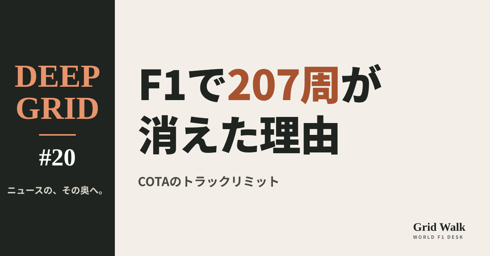
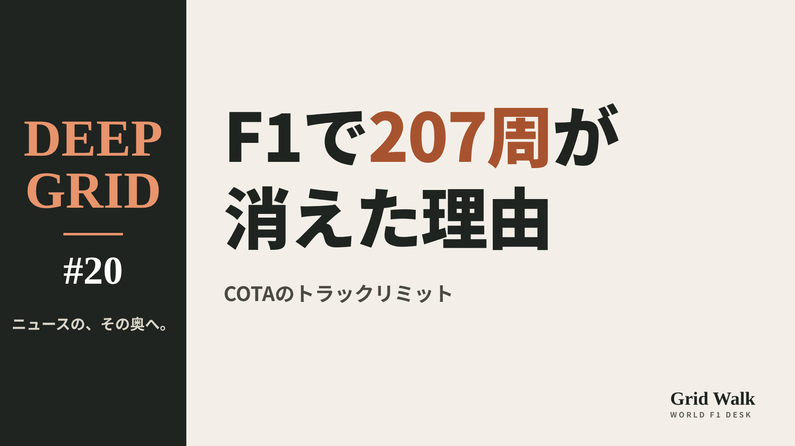
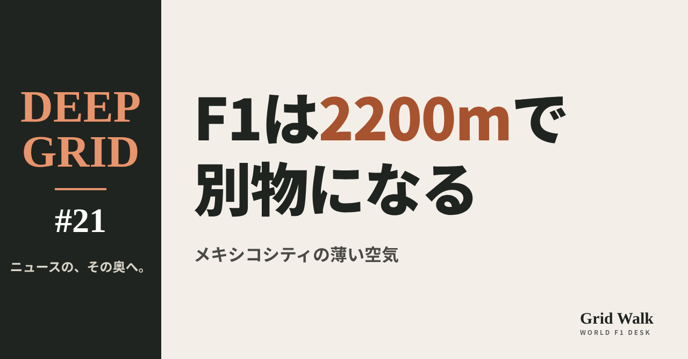
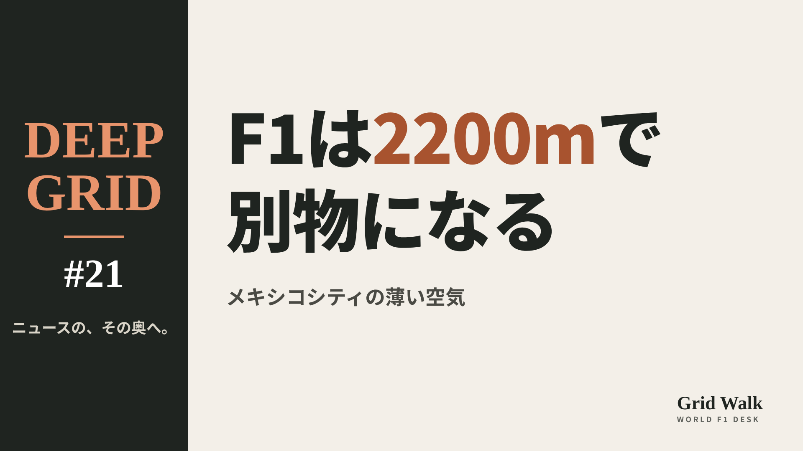
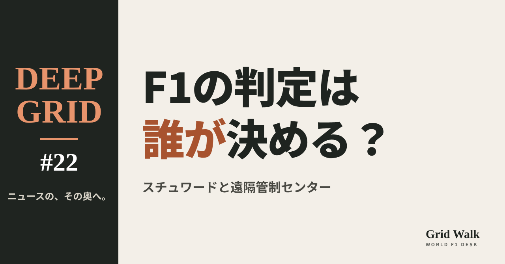
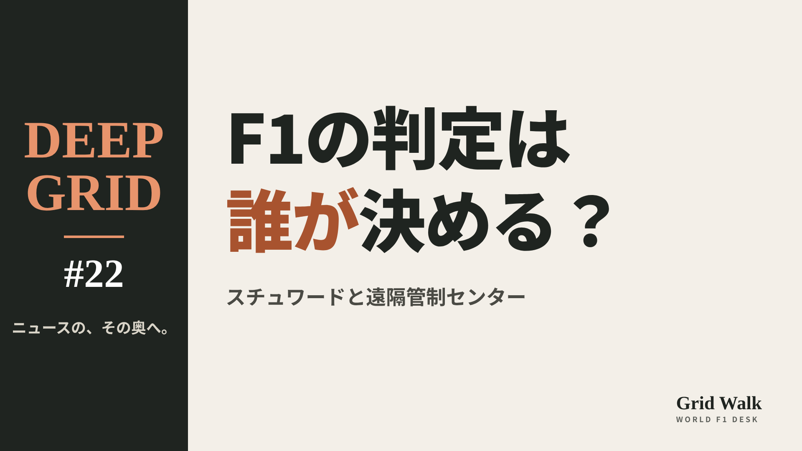

<meta charset="utf-8"><title>DEEP GRID #20〜#22 note貼り付け</title>
<style>
/* one column of numbered paste steps; text steps vs image steps differ by marker */
:root{--bg:#F5F4F0;--card:#FFFFFF;--ink:#1D2321;--mute:#5F665F;--line:#DCDAD2;--btn:#1F5FBF;--btnok:#2E8B4F;--img:#E9F3EC;--imgink:#22663B;--sans:'IBM Plex Sans JP','Hiragino Sans','Noto Sans JP',sans-serif}
@media (prefers-color-scheme:dark){:root:not([data-theme="light"]){--bg:#171A19;--card:#202423;--ink:#ECEDE8;--mute:#A3AAA2;--line:#343937;--btn:#4D8BE6;--btnok:#3FA866;--img:#1E2C23;--imgink:#8FD3A6;color-scheme:dark}}
:root[data-theme="dark"]{--bg:#171A19;--card:#202423;--ink:#ECEDE8;--mute:#A3AAA2;--line:#343937;--btn:#4D8BE6;--btnok:#3FA866;--img:#1E2C23;--imgink:#8FD3A6;color-scheme:dark}
body{background:var(--bg);color:var(--ink);font-family:var(--sans);font-size:15px;line-height:1.75;padding:20px 16px 60px}
main{max-width:680px;margin:0 auto;display:grid;gap:28px}
header h1{font-size:22px;margin:0 0 6px;text-wrap:balance}
header p{margin:0;color:var(--mute);font-size:14px}
nav{display:flex;gap:8px;flex-wrap:wrap;margin-top:12px}
nav a{border:1px solid var(--line);border-radius:999px;padding:4px 14px;color:var(--ink);text-decoration:none;font-size:14px;background:var(--card)}
.part h2{font-size:18px;line-height:1.5;margin:0 0 12px;text-wrap:balance;display:flex;gap:10px;align-items:baseline;flex-wrap:wrap}
.tag{font-size:13px;background:var(--ink);color:var(--bg);border-radius:6px;padding:1px 9px}
.steps{list-style:none;margin:0;padding:0;display:grid;gap:12px}
.st{background:var(--card);border:1px solid var(--line);border-radius:12px;padding:12px;min-width:0}
.hd{display:flex;align-items:center;gap:8px;margin-bottom:8px}
.no{width:26px;height:26px;border-radius:50%;background:var(--btn);color:#fff;display:inline-flex;align-items:center;justify-content:center;font-size:13px;font-weight:700;flex:0 0 26px}
.im .no{background:var(--btnok)}
.hd em{font-style:normal;font-size:12px;background:var(--img);color:var(--imgink);border-radius:6px;padding:0 8px}
.bx{font-size:13.5px;line-height:1.7;border:1px solid var(--line);border-radius:8px;padding:8px 10px;max-height:110px;overflow:auto;overflow-wrap:anywhere}
.bx.tall{max-height:150px}.bx p{margin:0 0 6px}.bx h2{font-size:14px;margin:8px 0 4px}.bx a{color:var(--btn)}
.st img{display:block;width:100%;max-width:100%;border:1px solid var(--line);border-radius:8px}
.sub{font-size:12.5px;color:var(--mute);margin:6px 0 0}
.cp{width:100%;margin-top:8px;padding:12px;border:0;border-radius:10px;background:var(--btn);color:#fff;font:600 15px var(--sans);cursor:pointer}
.cp.ok{background:var(--btnok)}.cp.dl{background:var(--btnok)}.cp:focus-visible{outline:3px solid var(--ink);outline-offset:2px}
.xh{font-size:15px;margin:20px 0 10px}
.fb{font-size:13px;line-height:1.7;margin:8px 0 0;padding:8px 10px;border-radius:8px;background:var(--img);color:var(--imgink)}
.opts{display:grid;grid-template-columns:repeat(auto-fill,minmax(240px,1fr));gap:10px}
.opt{min-width:0}.opt img{display:block;width:100%;border:1px solid var(--line);border-radius:8px}
.ol{display:flex;align-items:center;gap:8px;margin-top:6px}.ol b{font-size:13px;flex:0 0 auto}.ol .on{font-size:12.5px;color:var(--mute);flex:1;min-width:0}.ol .cp{width:auto;flex:0 0 auto;padding:9px 14px}.ol .cp{margin:0;padding:9px}
.toast{font-size:13px;color:var(--mute);margin-top:6px}
</style>
<main><header><h1>DEEP GRID #20〜#22 note貼り付け</h1><p>3本あります。青い番号は文章、緑は画像です。</p><nav><a href="#p1">#20</a><a href="#p2">#21</a><a href="#p3">#22</a></nav></header><section class="part" id="p1"><h2><span class="tag">DEEP GRID #20</span>COTAでは、なぜ金曜だけで207周も消えたのか【DEEP GRID #20】</h2><ol class="steps">
<li class="st im"><div class="hd"><span class="no">1</span><b>見出し画像</b><em>画像</em></div><button class="cp dl" data-img="img/cota-track-limits.png" data-name="deep-cota-track-limits_見出し画像.png">ダウンロード</button></li>
<li class="st"><div class="hd"><span class="no">2</span><b>タイトル</b></div><div class="bx" id="p1t">COTAでは、なぜ金曜だけで207周も消えたのか【DEEP GRID #20】</div><button class="cp" data-plain="p1t">タイトルをコピー</button></li>
<li class="st"><div class="hd"><span class="no">3</span><b>本文</b></div><div class="bx tall" id="p1r"><p>2026年のアメリカGP、金曜の2回のフリー走行だけで、207周分のタイムがトラックリミット違反で取り消された。FIAは土曜の朝、3つのコーナーで白線を太くし、予選の取り消しは8件だった。数字が跳ねた理由は、コースの形、金曜という時間帯、そして見張る側の仕組みの3つに分けて読むと見えてくる。</p><p>データの表と、出典25件はサイトで → <a href="https://f1gridwalk.github.io/deep/cota-track-limits/?utm_source=note&amp;utm_campaign=cota-track-limits">https://f1gridwalk.github.io/deep/cota-track-limits/?utm_source=note&amp;utm_campaign=cota-track-limits</a></p><h2>先に結論</h2><p>① 2026年アメリカGPの金曜、FP1で79周、FP2で128周、合わせて207周分のタイムが、白線の外に出たとして取り消された（GPblog、GPFans）。いちばん多かったのはアルボンの20周で、ノリスが18周だった（RacingNews365）。</p><p>② 多かったのは6・12・15・19・20コーナー（PlanetF1、GPblog）。アントネッリは、高低差と風に加えて、舗装が広く、出口の緑の部分もよくグリップするので、コースをさらに広く使いたくなると話している。</p><p>③ 金曜は練習なので、タイムが消えても大きな損はない。限界を探る走りが増える。最後の20コーナーで外に出ると、次の周のタイムまで消されることがあり、数がふくらみやすい。</p><p>④ FIAのレースディレクター、マルケスは土曜の朝、12・15・20コーナーの出口で白線を太くし、違反を見つける青い線も動かした（FIAの文書）。予選の取り消しは8件（7人）だった。決勝では、3回目の違反で黒白旗、4回目から1回ごとに5秒加算になる。</p><p>⑤ 白線を太くするのは「ゆるめる」ことでもある。白線ではなく、縁石の外にグラベル（砂利）のような「入ると損をする」ものを置くべきだという声は、2023年から続いている。ただ、COTAはMotoGPとコースを分け合っていて、簡単には置けない。</p><p><strong>あなたは、白線とグラベル（砂利）、どちらで走路を決めるのがいいと思いますか？</strong></p><h2>続きは F1 Grid Walk で</h2><p>ここから先の「金曜に、何がどれだけ消えたのか」「なぜCOTAで、なぜ金曜に多かったのか」「白線の外に出たかどうかは、どう決まるのか」「FIAは何を変え、決勝ではどうなるのか」「白線で見張るか、グラベルで止めるか」は、サイトで読めます。2026年アメリカGP、走行ごとのタイム取り消し、金曜（FP1とFP2）のドライバー別の取り消し、COTAのトラックリミット対策の移り変わり、大量の取り消しが出たレースの例、見張る仕組みの移り変わり、2026年の規則での扱いの表も載せています。</p><p><strong>DEEP GRID #20「COTAでは、なぜ金曜だけで207周も消えたのか」</strong></p><p><a href="https://f1gridwalk.github.io/deep/cota-track-limits/">https://f1gridwalk.github.io/deep/cota-track-limits/</a></p><p>━━━━━━━━━━</p><p><strong>F1 Grid Walk では、世界のF1ニュースを毎日日本語でまとめています。</strong></p><p>海外の記事の要約を、毎日載せています。</p><p>ほかの海外記事も読みたい方は、F1 Grid Walkへ。</p><p><a href="https://f1gridwalk.github.io/">https://f1gridwalk.github.io/</a></p><p>━━━━━━━━━━</p><p><a href="https://www.gpblog.com/nl/nieuws/fia-grijpt-in-na-207-overtredingen-van-coureurs-in-austin">出典：GPblog</a></p><p><a href="https://www.planetf1.com/news/fia-announcement-us-grand-prix-track-changes-lap-deletions">出典：PlanetF1</a></p><p><a href="https://www.gpfans.com/en/f1-news/1091902/f1-us-grand-prix-fia-track-limits-deleted-laps-crackdown-cota/">出典：GPFans</a></p><p><a href="https://racingnews365.com/f1-drivers-guilty-of-stunning-number-of-infractions-in-united-states-gp-practice">出典：RacingNews365</a></p><p><a href="https://racingnews365.com/kimi-antonelli-makes-important-point-over-austin-f1-track-limits-battle">出典：RacingNews365</a></p><p><a href="https://www.motorsportweek.com/2026/10/24/kimi-antonelli-austin-f1-track-limits/">出典：Motorsport Week</a></p><p><a href="https://www.autohebdof1.com/news/f1/From-120-to-40-track-limit-violations--race-control-took-action-before-F1-qualifying-in-Austin..html">出典：AutoHebdo</a></p><p><a href="https://www.formula1.com/en/latest/article/fp1-leclerc-fastest-in-first-practice-for-the-united-states-gp-ahead-of-verstappen-and-norris.125WlaFK7K1mXXyLgb93ui">出典：F1公式サイト</a></p><p><a href="https://racefans.net/2026/10/25/antonelli-pleased-and-surprised-to-avoid-another-track-limits-breach-in-qualifying">出典：RaceFans</a></p><p><a href="https://www.fia.com/system/files/decision-document/2026_united_states_grand_prix_-_race_directors_competition_notes_v3.pdf">出典：FIA</a></p><p><a href="https://www.fia.com/system/files/decision-document/2026_united_states_grand_prix_-_infringement_-_qualifying_deleted_lap_times.pdf">出典：FIA</a></p><p><a href="https://www.fia.com/news/fia-opens-new-remote-operations-centre-biggin-hill-ushering-new-era-f1-race-management">出典：FIA</a></p><p><a href="https://www.fia.com/system/files/decision-document/2026_austrian_grand_prix_-_infringement_-_race_deleted_lap_times.pdf">出典：FIA</a></p><p><a href="https://www.fia.com/system/files/decision-document/2025_united_states_grand_prix_-_race_deleted_lap_times.pdf">出典：FIA</a></p><p><a href="https://www.fia.com/system/files/decision-document/2025_united_states_grand_prix_-_infringement_-_sprint_deleted_lap_times.pdf">出典：FIA</a></p><p><a href="https://www.the-race.com/formula-1/how-1200-track-limit-reviews-overwhelmed-f1s-policing-system/">出典：The Race</a></p><p><a href="https://www.racefans.net/2023/11/23/fia-deactivated-inaccurate-track-limits-detection-loops-after-austrian-gp-mess/">出典：RaceFans</a></p><p><a href="https://www.crash.net/f1/news/1030507/1/aston-martin-protest-result-amid-track-limits-chaos-over-1200-instances">出典：Crash.net</a></p><p><a href="https://www.formula1.com/en/latest/article/explained-why-did-so-many-drivers-get-penalised-for-track-limits-in-austria.4JaMeZUwHGN4vdHRFTONNY">出典：F1公式サイト</a></p><p><a href="https://www.planetf1.com/news/ranked-f1-drivers-austrian-grand-prix-track-limits">出典：PlanetF1</a></p><p><a href="https://www.motorsport.com/f1/news/fia-tweaks-track-limits-ahead-of-f1-us-gp-after-complaints/10535875/">出典：Motorsport.com</a></p><p><a href="https://racingnews365.com/why-changing-track-limits-halfway-through-a-race-weekend-makes-no-sense">出典：RacingNews365</a></p><p><a href="https://www.grandprix247.com/2023/10/25/brundle-f1-drivers-struggling-to-see-the-white-lines-at-high-speed/">出典：GrandPrix247</a></p><p><a href="https://www.racefans.net/2024/10/20/austin-hasnt-solved-its-track-limits-problem-despite-improvements-to-circuit/">出典：RaceFans</a></p><p><a href="https://motorsportweek.com/?p=182001">出典：Motorsport Week</a></p></div><button class="cp" data-rich="p1r">本文をコピー</button></li>
<li class="st"><div class="hd"><span class="no">4</span><b>ハッシュタグ</b></div><div class="bx" id="p1h">#F1 #F1jp #DEEPGRID #アメリカGP #COTA #トラックリミット #F1解説</div><button class="cp" data-plain="p1h">タグをコピー</button></li>
</ol><h3 class="xh">X</h3><ol class="steps">
<li class="st im"><div class="hd"><b>X用の画像</b><em>画像</em></div><button class="cp dl" data-img="img/x_cota-track-limits.png" data-name="x_deep-cota-track-limits.png">ダウンロード</button></li>
<li class="st"><div class="hd"><b>① noteをシェアするときの文</b></div><div class="bx" id="p1x0">アメリカGPの金曜だけで、207周分のタイムが消えました。FIAは土曜の朝に白線を太くしました。トラックリミットはどう見張られ、なぜCOTAで多いのか。DEEP GRIDで深掘りしました #F1jp #DEEPGRID</div><button class="cp" data-plain="p1x0">コピー</button></li>
<li class="st"><div class="hd"><b>② ①への返信</b></div><div class="bx" id="p1x1">ほかの海外記事も読みたい方は、F1 Grid Walkへ。
https://f1gridwalk.github.io/deep/cota-track-limits/?utm_source=x&amp;utm_campaign=cota-track-limits</div><button class="cp" data-plain="p1x1">コピー</button></li>
<li class="st"><div class="hd"><b>③ ②への返信</b></div><div class="bx" id="p1x2">毎日の海外F1ニュースは、日本語でこちらにまとめています。
https://f1gridwalk.github.io/</div><button class="cp" data-plain="p1x2">コピー</button></li>
</ol></section><section class="part" id="p2"><h2><span class="tag">DEEP GRID #21</span>なぜメキシコシティでは、F1の車が「別物」になるのか【DEEP GRID #21】</h2><ol class="steps">
<li class="st im"><div class="hd"><span class="no">1</span><b>見出し画像</b><em>画像</em></div><button class="cp dl" data-img="img/mexico-altitude.png" data-name="deep-mexico-altitude_見出し画像.png">ダウンロード</button></li>
<li class="st"><div class="hd"><span class="no">2</span><b>タイトル</b></div><div class="bx" id="p2t">なぜメキシコシティでは、F1の車が「別物」になるのか【DEEP GRID #21】</div><button class="cp" data-plain="p2t">タイトルをコピー</button></li>
<li class="st"><div class="hd"><span class="no">3</span><b>本文</b></div><div class="bx tall" id="p2r"><p>11月1日のメキシコシティGPは、アントネッリの王座が決まるかもしれないレースだ。舞台のエルマノス・ロドリゲス・サーキットは海抜2,200mを超え、F1でいちばん高い。空気は海面より2割から4分の1ほど薄く、翼もラジエーターもブレーキもターボも、いつもどおりには働かない。今年はそこへ、MGU-Hのない新しいパワーユニットが初めて登る。薄い空気が車の何を変えるのかを、チームとメーカーの説明から順に読む。</p><p>データの表と、出典30件はサイトで → <a href="https://f1gridwalk.github.io/deep/mexico-altitude/?utm_source=note&amp;utm_campaign=mexico-altitude">https://f1gridwalk.github.io/deep/mexico-altitude/?utm_source=note&amp;utm_campaign=mexico-altitude</a></p><h2>先に結論</h2><p>① メキシコシティのコースは海抜2,200mを超え、F1が行く中でいちばん高い。メルセデスによると、気圧は約780hPaで海面の約1000hPaより2割ほど低く、空気の密度は約25％少ない。資料によっては22％としているものもある。</p><p>② 空気が薄いと、車を路面に押しつけるダウンフォースも、空気抵抗も減る。F1公式サイトの技術解説は「モナコ並みの翼をつけても、得られるのはモンツァ並みのダウンフォースだけ」と書き、メルセデスも同じ説明をしている。抵抗が減るぶん直線は速く、2016年の決勝では、ボッタスがスピードトラップで時速372.5kmを記録した。</p><p>③ いちばんの難題は冷やすことだ。ラジエーターやブレーキに当たる空気が少ないので、熱が逃げにくい。車体の空気の出口を広げれば冷えるが、そのぶん空力が落ちる。前の車のすぐ後ろを走ると、エンジンの水温はふつうのコースなら2〜3℃上がるところ、メキシコでは7〜8℃上がる、という解説もある。</p><p>④ ターボは薄い空気を押し込むために、ふだんより速く回る。ただ余裕は限られていて、メルセデスは「ターボを20％多く働かせるのは無理」とし、それでもエンジンの力は「かなり下がる」と説明する。一方、マクラーレンは「ターボの車には力の低下は起きない」と書いており、説明は分かれる。</p><p>⑤ 2026年は、ターボを助けていたMGU-Hがなくなり、電気と燃料の力の比が半々になった新しいパワーユニットが、初めてメキシコを走る。標高678mのオーストリアでも、HRCの折原伸太郎は「ターボへの要求が大きい」「冷却の管理も厳しいレースだった」と話した。その3倍以上の高さで何が起きるかは、まだ走ってみないと分からない。</p><p><strong>あなたは、薄い空気でいちばん困るのは、翼、冷却、ターボのどれだと思いますか？</strong></p><h2>続きは F1 Grid Walk で</h2><p>ここから先の「空気が「4分の3」の街で走る」「モナコの翼で、モンツァの力」「冷えない車：ラジエーターとブレーキ」「ターボは、薄い空気を吸うために回る」「2026年、MGU-Hのないパワーユニットが初めて2,200mへ」は、サイトで読めます。エルマノス・ロドリゲス・サーキットの数字、標高と空気の薄さ：資料ごとの数字、高い所にあるF1のコース、メキシコの最高速の記録、メキシコのブレーキ（2023年のブレンボの見積もり）、メキシコシティGPの優勝者（2015年以降）の表も載せています。</p><p><strong>DEEP GRID #21「なぜメキシコシティでは、F1の車が「別物」になるのか」</strong></p><p><a href="https://f1gridwalk.github.io/deep/mexico-altitude/">https://f1gridwalk.github.io/deep/mexico-altitude/</a></p><p>━━━━━━━━━━</p><p><strong>F1 Grid Walk では、世界のF1ニュースを毎日日本語でまとめています。</strong></p><p>海外の記事の要約を、毎日載せています。</p><p>ほかの海外記事も読みたい方は、F1 Grid Walkへ。</p><p><a href="https://f1gridwalk.github.io/">https://f1gridwalk.github.io/</a></p><p>━━━━━━━━━━</p><p><a href="https://www.formula1.com/en/racing/2026/mexico">出典：F1公式サイト</a></p><p><a href="https://www.formula1.com/en/latest/article/need-to-know-the-most-important-facts-stats-and-trivia-ahead-of-the-2025-mexico-city-grand-prix.25jpn16FhpRZvIpC4ULU5w">出典：F1公式サイト</a></p><p><a href="https://www.formula1.com/en/latest/article/tech-tuesday-why-its-the-air-that-poses-the-biggest-challenge-in-mexico.6qKZ7LcCKBT7xPTihVjIoq">出典：F1公式サイト</a></p><p><a href="https://www.formula1.com/en/latest/article/tech-tuesday-why-red-bulls-rb14-shone-at-breathless-mexico.lj8aRfw4FMG2SEuc2gu4o">出典：F1公式サイト</a></p><p><a href="https://www.fia.com/sites/default/files/f121_18_mexico_city_downsample.pdf">出典：FIA</a></p><p><a href="https://www.fia.com/sites/default/files/2025_20_mex_f1_q0_timing_qualifyingsessionmaximumspeeds_v01.pdf">出典：FIA</a></p><p><a href="https://www.fia.com/sites/default/files/2025_20_mex_f1_r0_timing_racemaximumspeeds_v01.pdf">出典：FIA</a></p><p><a href="https://www.fia.com/sites/default/files/2025_16_ita_f1_r0_timing_racemaximumspeeds_v01.pdf">出典：FIA</a></p><p><a href="https://www.mercedesamgf1.com/news/what-impact-does-high-altitude-have-on-an-f1-car">出典：メルセデス</a></p><p><a href="https://www.mercedesamgf1.com/races/mexico-city-grand-prix-2026">出典：メルセデス</a></p><p><a href="https://www.mclaren.com/racing/formula-1/2026/mexico-city-grand-prix/">出典：マクラーレン</a></p><p><a href="https://www.williamsf1.com/articles/1b7fa31b-4bbc-406e-b146-fe517cdcbd2f/what-are-the-challenges-of-racing-at-altitude">出典：ウィリアムズ</a></p><p><a href="https://www.williamsf1.com/posts/253b1dc5-aee9-4d3b-b720-8e30f3a83093/how-fast-can-an-f1-car-go">出典：ウィリアムズ</a></p><p><a href="https://www.alpinecars.nl/f1/f1-nieuws/reaching-new-heights-managing-mexico-high-altitude.html">出典：アルピーヌ</a></p><p><a href="https://www.autosport.com/f1/news/how-mexicos-altitude-fed-race-controversies-5109181/5109181/">出典：オートスポーツ（英国）</a></p><p><a href="https://racingnews365.com/why-the-tuning-of-an-f1-car-in-mexico-goes-against-all-logic">出典：RacingNews365</a></p><p><a href="https://racingnews365.com/ricciardo-on-unusual-mexican-gp-challenge">出典：RacingNews365</a></p><p><a href="https://thebrakereport.com/mexico-city-gp-brembo-details-brake-challenges/">出典：The Brake Report（ブレンボのデータ）</a></p><p><a href="https://www.f1technical.net/news/27919">出典：F1Technical</a></p><p><a href="https://scuderiafans.com/pirelli-confirms-2026-f1-tyre-compounds-for-austin-mexico-city-and-sao-paulo/">出典：ScuderiaFans</a></p><p><a href="https://scuderiafans.com/monza-is-no-longer-f1s-top-speed-benchmark-how-2026-energy-deployment-changed-everything/">出典：ScuderiaFans</a></p><p><a href="https://www.as-web.jp/f1/1014937">出典：autosport web</a></p><p><a href="https://www.as-web.jp/f1/1144613">出典：autosport web</a></p><p><a href="https://global.honda/en/F1/features/f1-explained/06/">出典：ホンダ</a></p><p><a href="https://www.f1technical.net/news/28130">出典：F1Technical</a></p><p><a href="https://www.the-race.com/formula-1/new-2026-unknown-will-be-a-curveball-at-f1s-austrian-gp/">出典：The Race</a></p><p><a href="https://racer.com/2026/06/24/honda-wary-of-greater-pu-deficit-at-austrian-altitude">出典：RACER</a></p><p><a href="https://honda.racing/f1/post/f1-2026-rd08-race">出典：ホンダ</a></p><p><a href="https://www.tudn.com/formula-1/formula-1-quienes-han-ganado-el-gran-premio-de-mexico-resultados-por-ano">出典：TUDN</a></p><p><a href="https://en.wikipedia.org/wiki/2025_Mexico_City_Grand_Prix">出典：FIA</a></p></div><button class="cp" data-rich="p2r">本文をコピー</button></li>
<li class="st"><div class="hd"><span class="no">4</span><b>ハッシュタグ</b></div><div class="bx" id="p2h">#F1 #F1jp #DEEPGRID #メキシコシティGP #メキシコGP #F1解説 #パワーユニット</div><button class="cp" data-plain="p2h">タグをコピー</button></li>
</ol><h3 class="xh">X</h3><ol class="steps">
<li class="st im"><div class="hd"><b>X用の画像</b><em>画像</em></div><button class="cp dl" data-img="img/x_mexico-altitude.png" data-name="x_deep-mexico-altitude.png">ダウンロード</button></li>
<li class="st"><div class="hd"><b>① noteをシェアするときの文</b></div><div class="bx" id="p2x0">標高約2200m。メキシコシティでは空気が薄く、F1の車は「別物」になります。モナコ並みの翼でもモンツァ並みの力しか出ない理由、冷却とターボ、2026年のPUまで。DEEP GRIDで深掘りしました #F1jp #DEEPGRID</div><button class="cp" data-plain="p2x0">コピー</button></li>
<li class="st"><div class="hd"><b>② ①への返信</b></div><div class="bx" id="p2x1">ほかの海外記事も読みたい方は、F1 Grid Walkへ。
https://f1gridwalk.github.io/deep/mexico-altitude/?utm_source=x&amp;utm_campaign=mexico-altitude</div><button class="cp" data-plain="p2x1">コピー</button></li>
<li class="st"><div class="hd"><b>③ ②への返信</b></div><div class="bx" id="p2x2">毎日の海外F1ニュースは、日本語でこちらにまとめています。
https://f1gridwalk.github.io/</div><button class="cp" data-plain="p2x2">コピー</button></li>
</ol></section><section class="part" id="p3"><h2><span class="tag">DEEP GRID #22</span>F1の判定は、誰がどこで決めているのか【DEEP GRID #22】</h2><ol class="steps">
<li class="st im"><div class="hd"><span class="no">1</span><b>見出し画像</b><em>画像</em></div><button class="cp dl" data-img="img/who-decides-penalties.png" data-name="deep-who-decides-penalties_見出し画像.png">ダウンロード</button></li>
<li class="st"><div class="hd"><span class="no">2</span><b>タイトル</b></div><div class="bx" id="p3t">F1の判定は、誰がどこで決めているのか【DEEP GRID #22】</div><button class="cp" data-plain="p3t">タイトルをコピー</button></li>
<li class="st"><div class="hd"><span class="no">3</span><b>本文</b></div><div class="bx tall" id="p3r"><p>5秒加算も、おとがめなしも、決めているのは中継に映らない人たちだ。レースを進める人と、裁く人は別にいる。裁く側は毎戦顔ぶれが変わり、その多くは給料をもらっていない。そして10月、英国ビギンヒルに、サーキットから離れて映像を見張る拠点が正式にできた。報告から裁定書まで、判定が覆る道、今季もめた判定とばらつきへの批判から、F1の「審判」の仕組みを読む。</p><p>データの表と、出典33件はサイトで → <a href="https://f1gridwalk.github.io/deep/who-decides-penalties/?utm_source=note&amp;utm_campaign=who-decides-penalties">https://f1gridwalk.github.io/deep/who-decides-penalties/?utm_source=note&amp;utm_campaign=who-decides-penalties</a></p><h2>先に結論</h2><p>① F1には、レースを進める人と、罰を決める人が別にいる。セーフティカーを出す、赤旗で止める、スタートの手順を仕切るのはレースディレクターで、2026年はルイ・マルケスが務めている。違反かどうかを調べて罰を決めるのは、スチュワードと呼ばれる審判役だ。</p><p>② スチュワードは、FIAが選ぶ3〜4人と、開催国の自動車連盟が選ぶ1人でできている。顔ぶれはレースごとに入れ替わり、法律家などのほかに元F1ドライバーが1人入る。GPFansによると、報酬は出ず、ふだんは別の仕事をしている人たちだ。</p><p>③ 流れはこうだ。レースディレクターが出来事を報告し、調べるかどうかはスチュワードが決める。ドライバーの話を聞いたうえで、理由を書いた裁定書を出す。罰の重さには目安の一覧があるが、FIA自身が「規則としての価値はない」としている。</p><p>④ 判定は覆ることもある。モナコGPのガスリーは、計時に使うピットレーンの距離の誤りが見つかって3位に戻ったが、ほかの2チームの控訴で9月に7位へ逆戻りした。10月には、140を超える映像と音声をAIの助けも借りて見る遠隔管制センターが正式に開いた。ただし、決めるのは今も人だ。</p><p>⑤ 今季も、似た接触で罰が出たり出なかったりして、ばらつきへの批判が続いた。毎戦同じ人が裁く常任のスチュワードや、給料を払うべきだという声がある。一方でFIAは、常任には偏りが生まれるおそれがあるとして反対していると報じられている。</p><p><strong>あなたは、F1に常任のスチュワードは必要だと思いますか？</strong></p><h2>続きは F1 Grid Walk で</h2><p>ここから先の「「進める人」と「裁く人」は別にいる」「報告から裁定書まで」「判定が覆るとき：再審査と控訴」「サーキットの外の目：ビギンヒルの遠隔管制センター」「今季もめた判定と、「ばらつき」への批判」は、サイトで読めます。判定にかかわる役割、今季のスチュワードの顔ぶれ（FIAの書類で確かめられた例）、違反の報告からペナルティまでの流れ、2026年モナコGP・ガスリーの順位の移り変わり、判定の仕組みの歩みの表も載せています。</p><p><strong>DEEP GRID #22「F1の判定は、誰がどこで決めているのか」</strong></p><p><a href="https://f1gridwalk.github.io/deep/who-decides-penalties/">https://f1gridwalk.github.io/deep/who-decides-penalties/</a></p><p>━━━━━━━━━━</p><p><strong>F1 Grid Walk では、世界のF1ニュースを毎日日本語でまとめています。</strong></p><p>海外の記事の要約を、毎日載せています。</p><p>ほかの海外記事も読みたい方は、F1 Grid Walkへ。</p><p><a href="https://f1gridwalk.github.io/">https://f1gridwalk.github.io/</a></p><p>━━━━━━━━━━</p><p><a href="https://api.fia.com/system/files/documents/fia_2026_f1_regulations_-_section_b_sporting_-_iss_07_-_2026-06-25.pdf">出典：FIA</a></p><p><a href="https://www.fia.com/system/files/decision-document/2026_miami_grand_prix_-_competition_visa.pdf">出典：FIA</a></p><p><a href="https://www.fia.com/system/files/decision-document/2026_australian_grand_prix_-_competition_visa.pdf">出典：FIA</a></p><p><a href="https://www.fia.com/system/files/decision-document/2026_chinese_grand_prix_-_infringement_-_car_12_-_causing_a_collision_with_car_6.pdf">出典：FIA</a></p><p><a href="https://www.fia.com/news/updated-fia-formula-one-world-championship-stewards-guidelines-driving-standards-penalties">出典：FIA</a></p><p><a href="https://www.fia.com/news/voice-experience">出典：FIA</a></p><p><a href="https://www.motorsport-total.com/formel-1/news/fia-eroeffnet-neue-f1-kommandozentrale-was-sich-jetzt-aendern-soll-26102103">出典：Motorsport-Total.com</a></p><p><a href="https://www.cronica.com.mx/deportes/2026/10/21/la-fia-inaugura-un-centro-de-operaciones-remotas-para-control-de-las-carreras-de-f1/">出典：Crónica</a></p><p><a href="https://www.racefans.net/?p=474158">出典：RaceFans</a></p><p><a href="https://www.gpblog.com/nl/nieuws/fia-grijpt-in-na-207-overtredingen-van-coureurs-in-austin">出典：GPblog</a></p><p><a href="https://www.gpfans.com/en/f1-news/1077719/f1-2026-australian-grand-prix-fia-stewards/">出典：GPFans</a></p><p><a href="https://www.gpfans.com/nl/f1-nieuws/1038898/liuzzi-over-werk-als-steward-van-fia-soms-kun-je-niet-iedereen-tevreden-stellen/">出典：GPFans（オランダ）</a></p><p><a href="https://www.gpblog.com/en/exclusive-news/fia-considers-major-breakthrough-in-the-use-of-stewards-in-formula-1">出典：GPblog</a></p><p><a href="https://www.the-race.com/formula-1/big-f1-penalty-guidelines-reveal-all-you-need-to-know/">出典：The Race</a></p><p><a href="https://www.the-race.com/formula-1/f1-2026-penalty-driving-guidelines-changes/">出典：The Race</a></p><p><a href="https://www.crash.net/f1/news/1090812/1/what-you-need-know-about-f1s-tweaked-penalty-and-driving-standards">出典：Crash.net</a></p><p><a href="https://www.the-race.com/formula-1/two-big-changes-fia-stewards-powers-for-2026/">出典：The Race</a></p><p><a href="https://www.motorsportweek.com/2025/12/19/fia-tweaks-rules-to-give-f1-stewards-power-to-change-decisions/">出典：Motorsport Week</a></p><p><a href="https://www.planetf1.com/news/fia-20000-protest-fees-after-red-bull-mercedes-mclaren-clashes">出典：PlanetF1</a></p><p><a href="https://racer.com/2026/06/12/gasly-s-monaco-third-place-reinstated-on-appeal">出典：Racer</a></p><p><a href="https://www.formula1.com/en/latest/article/gasly-loses-monaco-podium-as-penalties-reinstated-following-mclaren-and-red-bull-appeal.2DvZIUbpmqhnBSGJuDNjlv">出典：formula1.com</a></p><p><a href="https://www.the-race.com/formula-1/alpine-feels-unjustly-punished-as-gasly-loses-monaco-podium/">出典：The Race</a></p><p><a href="https://www.formula1.com/en/latest/article/stewards-reach-verdict-after-mclaren-intra-team-collision-in-singapore-gp-sprint.2LEoxWh3e7IEg674uCdLQ5">出典：formula1.com</a></p><p><a href="https://www.crash.net/f1/news/1107132/1/why-lando-norris-avoided-penalty-crashing-oscar-piastri-f1-singapore-gp">出典：Crash.net</a></p><p><a href="https://www.the-race.com/formula-1/shock-inaction-over-bakus-other-f1-team-mate-clash-explained/">出典：The Race</a></p><p><a href="https://www.crash.net/f1/news/1105807/1/liam-lawson-shock-f1-team-mate-arvid-lindblad-escapes-penalty-i-dont-understand">出典：Crash.net</a></p><p><a href="https://www.motorsportweek.com/2026/10/11/pierre-gasly-mclaren-stewards-f1-singapore/">出典：Motorsport Week</a></p><p><a href="https://the-race.com/formula-1/why-antonelli-avoided-a-penalty-that-seemed-obvious/">出典：The Race</a></p><p><a href="https://www.crash.net/f1/news/1107526/1/no-kimi-antonelli-track-limits-penalty-leaves-more-questions-answers">出典：Crash.net</a></p><p><a href="https://www.f1oversteer.com/news/andrea-stella-cant-understand-fias-verdict-on-kimi-antonellis-track-limits-violation-in-singapore">出典：F1 Oversteer</a></p><p><a href="https://www.planetf1.com/news/carlos-sainz-fia-permanent-stewards">出典：PlanetF1</a></p><p><a href="https://www.grandprix247.com/formula-1-news/f1-news-drivers-seeking-paid-fia-stewards-for-consistent-decision-making-formula-1-qatar-gp">出典：GrandPrix247</a></p><p><a href="https://www.grandprix247.com/formula-1-news/fias-officials-department-a-solution-to-inconsistent-formula-1-stewarding">出典：GrandPrix247</a></p></div><button class="cp" data-rich="p3r">本文をコピー</button></li>
<li class="st"><div class="hd"><span class="no">4</span><b>ハッシュタグ</b></div><div class="bx" id="p3h">#F1 #F1jp #DEEPGRID #F1解説 #スチュワード #ペナルティ #FIA</div><button class="cp" data-plain="p3h">タグをコピー</button></li>
</ol><h3 class="xh">X</h3><ol class="steps">
<li class="st im"><div class="hd"><b>X用の画像</b><em>画像</em></div><button class="cp dl" data-img="img/x_who-decides-penalties.png" data-name="x_deep-who-decides-penalties.png">ダウンロード</button></li>
<li class="st"><div class="hd"><b>① noteをシェアするときの文</b></div><div class="bx" id="p3x0">5秒加算は、誰がどこで決めているのか。レースディレクターとスチュワードの違い、イギリスの遠隔管制センター、モナコのガスリーの再審査と控訴まで。DEEP GRIDで深掘りしました #F1jp #DEEPGRID</div><button class="cp" data-plain="p3x0">コピー</button></li>
<li class="st"><div class="hd"><b>② ①への返信</b></div><div class="bx" id="p3x1">ほかの海外記事も読みたい方は、F1 Grid Walkへ。
https://f1gridwalk.github.io/deep/who-decides-penalties/?utm_source=x&amp;utm_campaign=who-decides-penalties</div><button class="cp" data-plain="p3x1">コピー</button></li>
<li class="st"><div class="hd"><b>③ ②への返信</b></div><div class="bx" id="p3x2">毎日の海外F1ニュースは、日本語でこちらにまとめています。
https://f1gridwalk.github.io/</div><button class="cp" data-plain="p3x2">コピー</button></li>
</ol></section></main><script>
function done(b,msg){const t=b.dataset.t||b.textContent;b.dataset.t=t;b.classList.add('ok');b.textContent=msg||'コピーしました';setTimeout(()=>{b.classList.remove('ok');b.textContent=t},2000)}
function selectEl(el){const r=document.createRange();r.selectNodeContents(el);const s=getSelection();s.removeAllRanges();s.addRange(r)}
async function rich(el,b){
  try{await navigator.clipboard.write([new ClipboardItem({'text/html':new Blob([el.innerHTML],{type:'text/html'}),'text/plain':new Blob([el.innerText],{type:'text/plain'})})]);done(b);return}catch(e){}
  selectEl(el);let ok=false;try{ok=document.execCommand('copy')}catch(e){}
  if(ok){getSelection().removeAllRanges();done(b)}else{done(b,'選択しました。コピーしてください')}}
async function plain(el,b){
  try{await navigator.clipboard.writeText(el.innerText);done(b);return}catch(e){}
  selectEl(el);let ok=false;try{ok=document.execCommand('copy')}catch(e){}
  if(ok){getSelection().removeAllRanges();done(b)}else{done(b,'選択しました。コピーしてください')}}
let dlns=null;(async()=>{try{dlns=await window.claude?.use?.("downloads")}catch(e){dlns=null}})();
async function img(src,b){
  b.dataset.t=b.dataset.t||b.textContent;
  if(!dlns){try{dlns=await window.claude?.use?.("downloads")}catch(e){}}
  if(!dlns){b.textContent='ダウンロードできませんでした';setTimeout(()=>{b.textContent=b.dataset.t},3500);return}
  try{const blob=await fetch(src).then(r=>r.blob());b.textContent='保存の確認を開いています…';
    await dlns.save({filename:b.dataset.name,data:blob});done(b,'ダウンロードしました')}
  catch(e){const c=e&&e.code;b.textContent=c==='declined'?'キャンセルしました':c==='rate_limited'?'少し待ってからもう一度押してください':'ダウンロードできませんでした';setTimeout(()=>{b.textContent=b.dataset.t},3500)}}
document.querySelectorAll('.cp').forEach(b=>b.addEventListener('click',()=>{
  if(b.dataset.rich)rich(document.getElementById(b.dataset.rich),b);
  else if(b.dataset.plain)plain(document.getElementById(b.dataset.plain),b);
  else img(b.dataset.img,b)}));
</script>